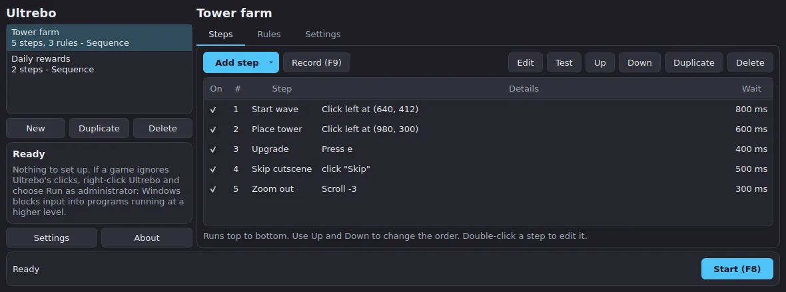
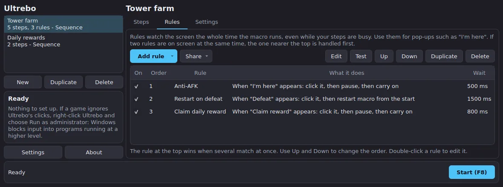

Record your mouse clicks and key presses, replay them on a loop, and let your computer react when a button or some text shows up on screen. Built for repetitive game tasks like tower-defense farming.
Windows 10 and 11, and macOS (Apple silicon and Intel). Free, with no accounts, no ads and no tracking. Looking for the phone version? Ultrebo for Android.
Press F9, play normally, press F9 again. Ultrebo saves each click, drag, scroll and key press with the pauses between them.
Change positions, waits, repeats and order. Test a single step. Switch steps on and off.
Drag a box over a button or icon on your screen and Ultrebo clicks it whenever it appears.
Type the words to look for (like "I'm here") and it clicks them when they show up. Text is read on your computer, offline.
Always-watching detections that check the screen while your macro runs. Pause and carry on, or restart the macro, when a pop-up appears. If two show at once, the one nearest the top goes first.
Export your rules as one file and send it to other players, so they don't have to set everything up themselves.
Paste a Discord webhook, tick a step or rule, and Ultrebo posts a screenshot to your channel whenever it is found, so you can walk away and still know.
F8 starts and stops, F9 records, even while a game has focus. You can change both keys. Choose which monitor it watches if you have more than one.
Macros and screenshots stay on your computer. Network use is an optional check for a newer version, and a screenshot only if you set up Discord alerts.


There is no installer. Download the zip for your system from the latest release, unzip it, and run Ultrebo.
Ultrebo-v….-windows-x64.zip and unzip it anywhere, for example on your Desktop.Ultrebo folder and double-click Ultrebo.exe.Ultrebo.exe and choose Run as administrator.Ultrebo-v….-macos-apple-silicon.zip (M1 and newer) or the Intel one, and unzip it.Play in windowed mode, and don't move or resize the game window between recording and running, because clicks are recorded as screen positions.
When a newer version is out, Ultrebo tells you when it opens. Click Update now and it downloads the new version, checks it against GitHub's published checksum, closes, swaps the new files in and opens again. Your macros and settings are kept. On a Mac you may need to switch the three permissions back on afterwards. Versions before 0.1.1 only show the notice, so download the first update by hand.
Everything runs on your computer. Your macros and the pictures you crop are stored in your user folder. Screenshots are looked at in memory and thrown away; the only picture saved is the box you crop. Text recognition is bundled and runs offline. Network use: the optional update check against GitHub, which you can switch off in Settings; downloading the new version if you click Update now; and, only if you set a Discord webhook in Settings and tick the option on a step or rule, a screenshot sent to that webhook when it is found. The webhook address is saved only on your computer and is never part of a shared rules file.
Recording captures every key you press until you stop it, so don't type passwords while recording.
Don't move or resize the game window after recording. On Windows, keep display scaling the same as when you recorded. Re-record if in doubt.
On Windows, run Ultrebo as administrator. Some games with anti-cheat block simulated input entirely, and nothing here works around that.
Check that Accessibility and Input Monitoring are switched on for Ultrebo, then quit and reopen it.
Re-pick the image or lower the match threshold (try 0.75). For text, lower the match strictness (try 0.7), or use an image for stylised game fonts.
There is no packaged Linux build. It can run from source on X11, but not on Wayland, which blocks the kind of input control Ultrebo needs.
Many games forbid automation in their terms of service and may suspend accounts that use it. Ultrebo does not hide itself or avoid detection. You are responsible for how you use it.
Join the Discord server and open a support ticket. Say your operating system and what you did.